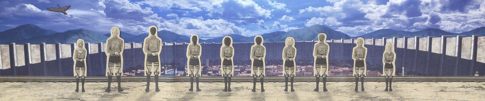
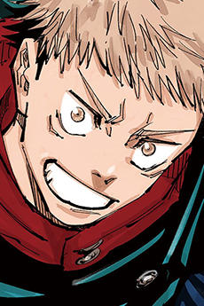
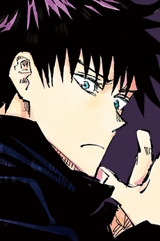
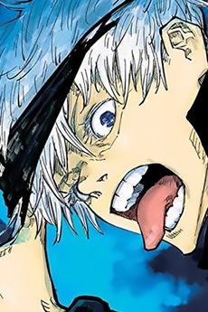

Jujutsu Kaisen
WatchingYears before Yuji enrolls, two students are asked to guard a girl whose life the whole jujutsu world is watching. Then, on Halloween, a sealed curtain drops over Shibuya.
01The record.
Season 2- The hero keeps D1 and adds a facts line in Home's scene-fact language (10 pt
footFact): year, format, episodes, length, studio, score. Each part is dropped when it is missing. - Home's season tab sits on the artwork ("SEASON 2 of 2"), as a separate 44 pt target that opens the map (frame 3). It is only shown for a multi-season title.
- The next line on the material reads from
ReleasesStorewithReleaseCopywording. It shows a time because the precision is instant and the release is confirmed. The bell is the item 10 detail entry point, and it asks permission only on tap. - Toggle VoiceOver order above: ✕, title, status, facts, next, season tab, story, then sections in page order.
03Episodes
7 of 23 out · you're on 6- The record continues the ledger. Source and studio rows are links (›). Score names its source ("AniList"), never a Kuro rating.
- The timeline is one 1 pt spine. The numeral column is the order, the dot is the state (filled = watched, material = up next, hollow = later), and ✓ comes from Library progress. 49k of 51.5k episodes have a title and a thumbnail; the rest get the branded tile with the number.
- The Up next row keeps the D6 wash card and material +1 key. It only offers an episode that is already out.
- Future rows follow ReleaseCopy: the confirmed row has a time, a countdown and a bell. The estimate row has a day only ("Around Fri 14 Nov") and no bell. "Date to come" has neither. Thumbnails here are crops of the prototype cover.
02The map.
2 seasons · 1 film · from the manga
- One horizontal year axis. Seasons and films are stations above it, and the source is a hollow station. The current season is ringed in its material. The map comes only from the proven ladder (
get_media_ladder); a single title has no map. - Under the map is the same ladder as an index (01, 02, — for extras). Each row pushes its title (N5 pops back on a repeat). The ✓ "Finished" comes from Library, "Current" from this page.
- Item 5: "The original story" now shows the real manga cover with a two-line page edge instead of the 原作 book glyph. A film without art gets the branded tile (number plus kind), never a kanji placeholder.
The sound of it.
5 songs · 2 cours

- Songs are grouped by cour or season (the cour name plus its episode span), and every row names the artist. Version tags ("TV size", "v2 · Ep. 17") are hairline stamps after the title.
- Playing: the ▶ becomes ❚❚ on the wash face, and a 30 s scrub with times opens under the row. One preview plays at a time; it stops on leaving the page and under the system's audio rules. "Open in Apple Music" is the matched track's own URL. Spotify stays a search link.
- No match: no artwork and no ▶. The kind shows in a branded tile, and the ↗ only searches. A preview needs both a normalised title match and an artist match above the confidence threshold; anything lower counts as no match.
- Spoiler: the artwork and title stay covered until tapped, and there is no ▶ until revealed. Attribution sits in the panel foot. Artwork here is cropped from the prototype's covers, standing in for iTunes Search artwork.
06Behind the frames.
Season 207More like this.
Because of Jujutsu Kaisen


08Between us.
Your clubs · private- The credits stay the D10 ledger. Every name is a link (›) to its person or studio page, which is the index you can follow.
- More like this reads
media_similar_titles, the same engine as Taste. Cards are 100 × 150 with a 12 pt title and a 10 pt "year · format · count" line. The rail bleeds past the gutter, and the fourth card peeks about 30 pt. - Keys follow Taste/Discover: Plan (light key face) plans with a toast and Undo, Planned (dark leaf) unplans, and a title already tracked shows its status mark instead of a key. A long press keeps the menu.
- The section numbers (06, 07, 08) are the page's own index. They are hidden from VoiceOver, so the heading alone is read.
05The characters.
Japanese cast


- The rail is always drawn when character rows exist (main roles first). Each card adds a hairline and the Japanese voice actor (new data: AniList
characters.edges.voiceActors(language: JAPANESE)). It peeks like every rail. - The cast index below is a two-sided ledger: the left half opens the character page and the right half opens the voice actor's staff page. These are two separate targets per row, each at least 44 pt tall, read by VoiceOver as "Yuji Itadori, Main" then "Junya Enoki, voice".
- Voice actor portraits use the branded monogram tile until a staff image is imported. A face is never guessed.

Chainsaw Man
ReadingChapters
67 outSeen the anime?
- The manga hero keeps the serif title and page stack. The record becomes a five-cell index strip (year, volumes, chapters, status, score). An ongoing count says "Ongoing", never a made-up total.
- Next chapter comes from the release read model. "Ch. 68 expected Wed" is an estimate, so it has a day and no time, a dashed stamp and a disabled bell. Estimates never notify.
- Item 5: "Seen the anime?" drops 映 for the adaptation's real cover; with no cover it shows the branded tile, as here. Chapter numbers stay italic serif, as the amendment-1 list allows.
Main role
A first-year at Tokyo Jujutsu High with unusual physical strength, who becomes the vessel of a cursed spirit after swallowing one of its fingers.
Voiced by
JapaneseAppears in
3 titles- Home's grammar on the warm canvas
#FFFEF8: the opening row (kicker 9/1.05 + headline), a 2:3 portrait at radius 5 (not a circle), the name at 24 semibold −0.85, the native name muted, and facts as a short ledger (only those that exist). - Voiced by is a quiet row that pushes the staff page (frame 9). "9 roles in Kuro" counts only rows Kuro holds.
- Appears in uses quiet rows with Plan keys or status marks. This is a pushed page, so it shows ‹ back and ✕ (N1/N3), and its back gesture returns to the cast index.
Voice actor
Voiced
CharactersWorks
By year- The black
ALL / ANIME / MANGAandALL ROLES / DIRECTORpills are gone. One refine row (Discover's word grammar: 11 pt medium, ink with a 16 × 1.5 rule when selected) carries the role filter on the left and the sort on the right. Counts make empty choices obvious. - Voiced lists characters, so the link runs both ways: Yuji → Enoki → Yuji. N5 pops back instead of pushing a copy.
- Works is a year-indexed ledger (the mono year column is the archive numeral). Titles in serif caps become 15 pt medium sentence case.
Animation studio
2020s
34 titles2010s
27 titles- The studio name is set as Home's cover line (34 semibold −1.1, sans), with three thumbs in the glance-card style. The only facts are counts Kuro can prove: titles in the catalogue and titles on your lists.
- Works are grouped by decade, each with an in-feed sub-heading and count, and each row carries its year numeral. The same refine row as the staff page replaces the pills.
- Missing covers use the branded tile with a short title mark, the same tile used everywhere else in this direction.
Mina
Your record.
From your list · on this iPhoneTop genres
By titles on your list14 stories finished.

Time spent is episodes watched × each episode's length. Counted on this device from your list and the catalogue. Nothing is sent.
- Three totals sit in a glance card (Home's #FFFEFA card, 24 pt tabular numerals). Each total is dropped when its source is missing; a title without an episode length adds nothing to time, so it is never padded.
- Top genres is an index with Home's scrub as the bar (1 pt track, 2 pt ink trace, monochrome). Counts are titles, not percentages.
- Your year is the only dark card: the neutral material (#3a3d3c), because it has no single title's artwork. "Started" and "finished" need dated Library events; without them the card is hidden, not estimated.
Preview first.
Kuro reads the complete selected list, you review every title, then confirm what to save. Existing Kuro values stay unless you choose updates.
Kuro reads public AniList lists. Private entries stay private and are not imported.
- The serif page title, black pills and boxed field are gone. The page uses Home's opening row, a 24 pt sans title, an underline field with an ink rule, medium words for Type (both can be on), and a two-column check ledger for Status.
- Every string is the shipping copy from
ConciergeView+AniListImport.swift(EN shown, DE unchanged). "Form · Preview" becomes the refine row. The primary key keeps its words; only its casing follows Home. - The behaviour is unchanged: the same toggles, the disabled state with no username, the busy state with Stop reachable, and swipe-down blocked while busy (N7). The MAL XML, review/match and chooser screens take the same parts: the opening row, quiet rows with 40 × 60 covers for matches, the refine row for Add / Update / Skip, and the ink key.
- Small, anime: the title's art over its material, with a confirmed release: episode, day, time, countdown. Small, manga: manga paper, with an estimate: day only and a dashed stamp. These follow the same ReleaseCopy rules as the page.
- Medium: Home's scene-card vocabulary: material foot, count, scrub and the light +1 key (an interactive
AppIntent, iOS 17). The key names the episode it will mark, "Ep. 7". - +1 writes only through
LibraryActions→ ProgressOutbox, with the revision fence. It never uses a URL. The widget reads a snapshot from the App Group. While a write is pending the key holds still; on a fence conflict the widget shows the server count and no confirm stamp.
Episode 8 is out. Season 2.
Folge 8 ist da. Staffel 2.
Asked only here or on a bell
Only confirmed or announced times notify. Estimates never do. Signing out clears every reminder on this iPhone.
- Local notifications are scheduled by
ReminderSchedulerfrom the release schedule. Each one names the title and the unit, and the season when there is more than one. The thumbnail is the cover; there is no marketing line. Tapping it opens the title as a new journey (N10). - Permission is asked only from an explicit action: the Profile toggle shown here, or a detail bell. An estimate never schedules a reminder, and the row says so instead of hiding it.
- Reminders are cleared on sign-out and account switch (
AccountScopedState.clearPrivateState). EN and DE useKuroLocale; the DE banner shows the German line.